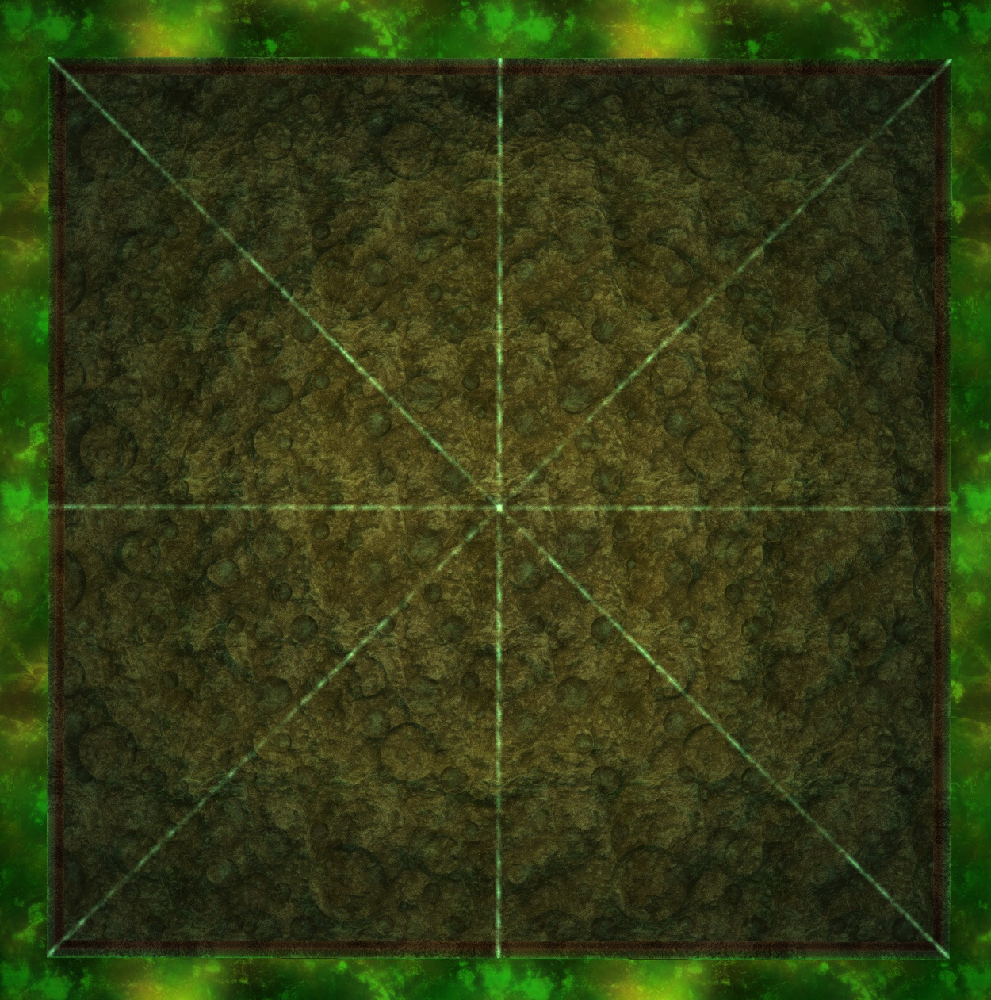

Raid Template
Click view page source in the upper right hand corner to view template as RST plaintext
Party Finder
Search Comment
This is the text can be placed in the party finder search comment. Text in this box can be one click copied
Definitions
- term 1
This is the definition of term 1
- term 2
This is the definition of term 2 It can span multiple lines as long as the indentation matches
- term 3
This is the definition of term 3
Note
You can add an admonition box to draw attention to something specific, such as an example or further clarification It can span multiple lines as long as the indentation matches
- term 4
- This is the definition of term 4
You can use an unordered list by prefacing the line with an asterisks
Lists must match the parent indentation level
You can add a sublist to a list
Sublists must match the parent indentation level
You can use an ordered list by prefacing the line with a octothorpe
Ordered lists must match the parent indentation level
Sub ordered lists can be used and will follow their own number range
The parent list will continue its number order after the sublist ends
Waymarks

Waymark import
This section can be used to create copyable text box of a waymark preset to be imported through Dalamund
Warning
A bunch of shitty players have been crying about people clearing content they don’t even qualify to see the cutscene for while using preloaded waymarks. So SE was forced to respond in true SE fashion:
You can read their response here
{kind=link}
- In Summary:
SE acknowledges that they made a shit waymark system
SE then blames players for circumventing it
SE demands you delete the way markers now
But SE also acknowledges that they’re good waymarks and they’ll make it so you can manually remake the same exact markers.
But not yet. For now just delete your good waymarks and then we will let you remake them exactly the same sometime later, maybe. Idiot.
No one has been punished for using the waymarks (except that one idiot, but he deserved it the most)
No one will be banned for using the markers (unless they arbitrary decide otherwise)
At the end of the day the odds of you getting caught using 3rd party addons are slim to none unless you do something stupid. But as always use at your own risk.
the waymark import string must be drawn here